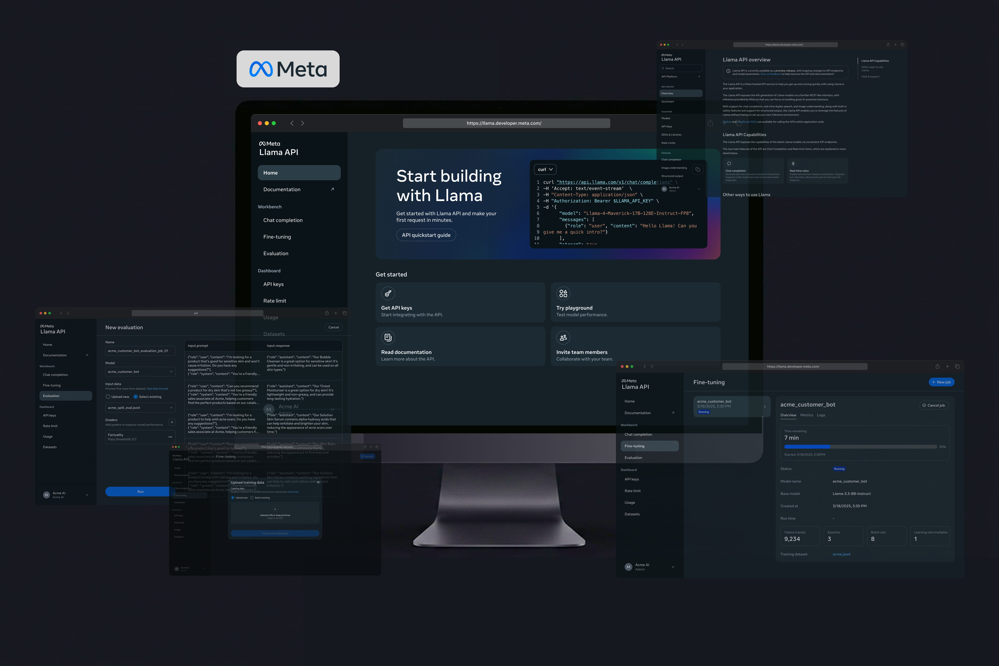
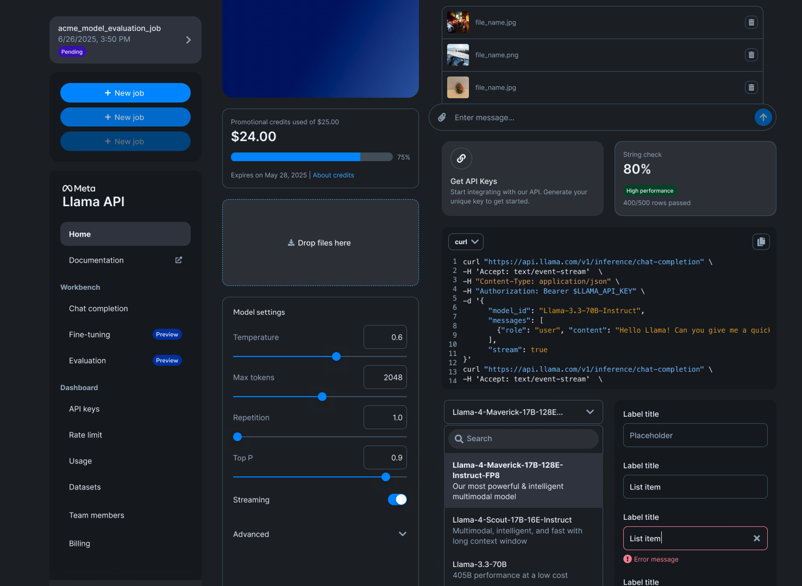
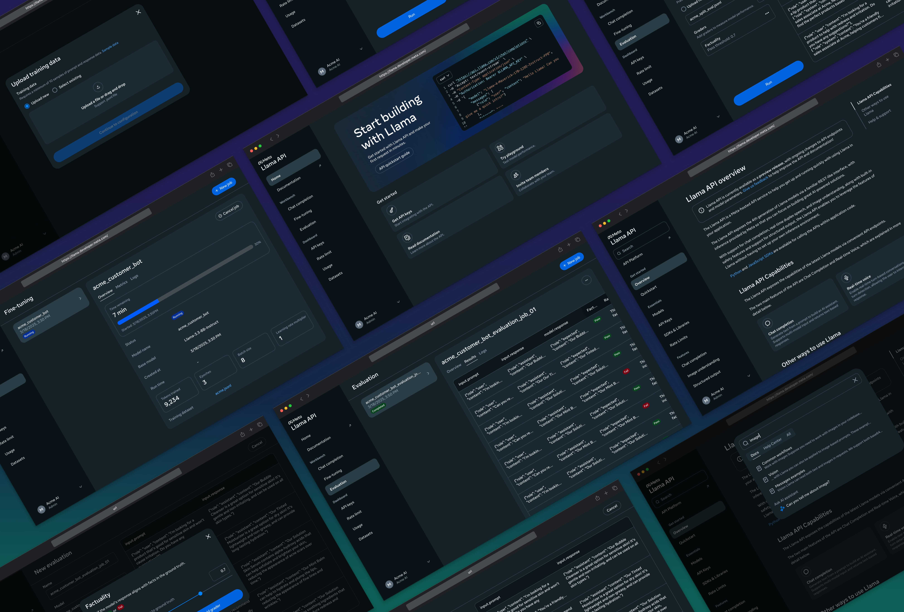
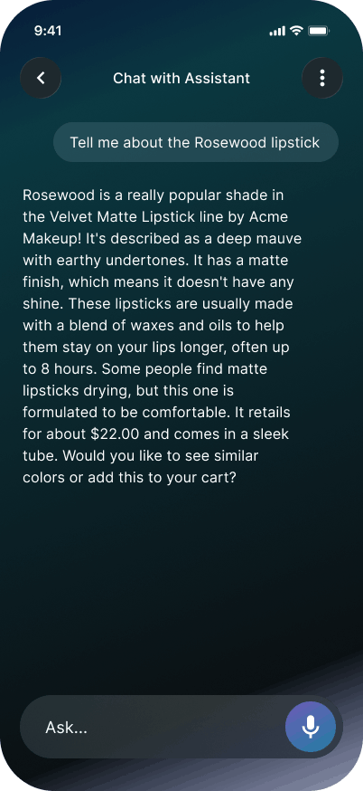
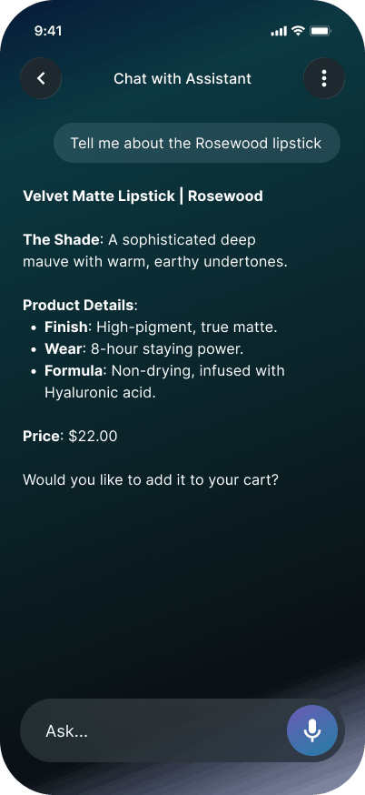

April 2025
Presented at LlamaCon to 700+ guests and Mark Zuckerberg; 3.8M livestream viewers.

I shipped end-to-end fine-tuning and evaluation on the Meta Llama API Platform.
Customer outcomes
AT&T — ~10× faster insights, ~90% lower cost on call summarization. (source)
Spotify — +14% domain-specific accuracy. (source)
Livestream viewers · LlamaCon keynote
Reached 20K+ signups in the first two months
Shipped the core experience in 6 weeks

Fine-tuning runs easily but stays hard to understand.
Most users are small businesses and students without ML backgrounds—they want cheaper, faster models, not more knobs.
In practice:
People get stuck when they can't answer:
The goal isn't to show every control—it is to keep the path from start to finish easy.
Fine-tuning helps when long prompts get expensive, slow, or inconsistent. Teach the model once, then reuse that behavior at lower cost.
The workflow: upload examples, split data, train, evaluate, iterate.

For a customer-support task, the model had to turn messy refund requests into consistent answers.
Before fine-tuning, each request needed a long prompt. After fine-tuning, the model learned the tone, format, and policy logic from examples.


Decision 1
Required a train/eval split up front.
→ Grounds performance in unseen data, not assumptions.
Decision 2
Designed a guided linear flow with strong defaults—no ML course required.
→ Cuts setup friction and speeds up a first successful run.
Decision 3
Surfaced logs and status during training—not a silent spinner.
→ Lowers uncertainty on long jobs and keeps people oriented.
Decision 4
Kept the surface focused on lightweight evaluation results and downloadable model outputs—not dense dashboards.
→ Lets people plug results back into their own AI tools for deeper analysis.
The product centers on one clear loop:
Data → Train → Evaluate → Test → Iterate
That meant keeping the surface focused on the core loop, not expanding into dataset management, deep analytics dashboards, or batch inference tooling.
The goal isn't to make fine-tuning easier—it is to make it understandable.